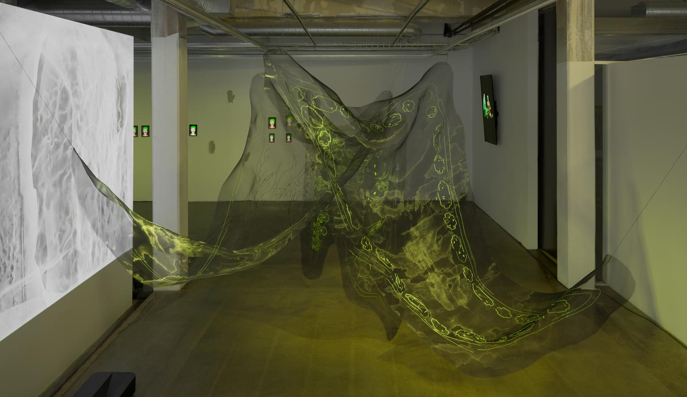
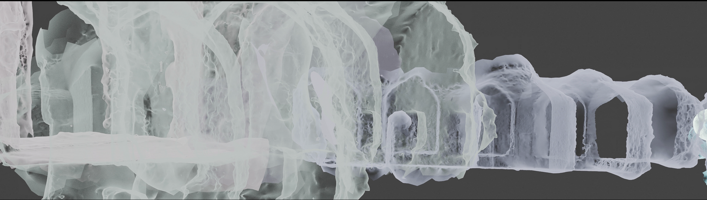
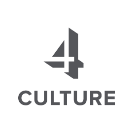

De/Angular
Close ×
Animated Video
Duration: 00:09:00
Digital Character Design
Animated Video
Duration: 00:09:00
Digital Character Design

Still from Animated Two Channel Video
Duration: 00:25:00
De/Angular is part of my ongoing research, De/Angular Worlding, which explores Middle Eastern queer worlding by hijacking Twelver Shi'ism material culture. The work operates through speculative systems, drawing on the architectural, ritual, and ornamental structures that have historically organized authority in Iran.
By reworking inherited iconographies and material traditions, I ask what kinds of bodies, behaviors, and presences must be excluded for these systems to remain stable and legible. The work experiments with virtual environments, traditional and electronic textiles, and digital sound to imagine alternative ways of being.
This project is supported, in part, by a grant from 4Culture.
